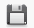

Ayuda Configuración Global
Contenido:
- Vista General
- Barra de Menús
- Barra de Información Usuario
- Barra de Herramientas
- Selector de Página
- Panel del Sitio
- Panel Comercial
- Panel del sistema
Vista General
Barra de Menús

La barra de menús nos permite tener un acceso direccto un sector del sistema, permite una mejor navegación por el sistema.
La barra de menús varia en base al tipo de usuario logeado (niveles), si ingresa el super admin tendra mayores opciones en la barra de menús, adiferencia de un usuario de nivel bajo solo vera la barra de menús relacionado con el cargo que este ocupa.
Barra de Información Usuario

La barra de información usuario nos muestra la información del usuario Logeado, también nos permite tener acceso directo a mensajesprovenientes de otros usuarios del sistema, podemos finalizar la aplicación de forma segura haciendo clic en Finalizar.
Barra de Herramientas
Esta el la barra de herramientas de configuración global, cada botón nos permite ejecutar una acción en concreto, a continuación explicamos el funcionamiento de cada botón.
Guardar
Este botón nos permite guardar los cambios sin salir de la ventana.
 Guardar & Cerrar
Este botón nos permite guardar los cambios y nos redirecciona al menú principal.
Cancelar
Este botón nos permite salir de configuración global y redirigirnos al menú principal.
Selector de Página
El selector de página nos permite cambiar de página, pudiendo cambiar de la página general a la página de Logs, Logs nos muestra una lista con todos los eventos importantes registrados del sitema esto para tener un mayor control sobre las actividades que realizan los usuarios en el sistema.
Panel del Sitio
El panel del sitio nos permite realizar configuraciones que afectaran al sistema en general, todos los campos marcados con * son obligatorios, a continuación explicamos las configuraciones:
En el campo Empresa * colocamos el nombre de la empresa.
En la opción Sitio desactivado esta es una opción muy importante del sistema el cual permite activar el funcionamiento dl sistema o desactivarlo, esta opción es utilizada cuando se efectuan correcciónes, mantenimiento del sitema en general, al activar la opción "Si" ningún usuario podra ingresar al sistema, solo podra ingresar el super administrador, el sistema ingresara a modo prueba de fallos.
En el campo Mensaje para el sitio web desactivado colocamos un mensaje que aparecera al usuario cuando ingrese al sistema.
En la opción Plantilla de impresión Boletos nos permite seleccionar una plantilla de impresión para imprimir los boletos, deacuerdo al diseño de los boletos, por defecto express bus trae una sola plantilla de impresión, si la empresa posee otro modélo de impresión, sera necesario crear una nueva plantilla e instalarlo en el gestor de de instalación esto en el menú principal.
si la empresa posee otro modélo de impresión, sera necesario crear una nueva plantilla e instalarlo en el gestor de de instalación esto en el menú principal.
Panel comercial
Panel comercial nos permite restablecer o resetear los valores del registro comerical, tenga precaución al utilizar estas opciones ya que el cambio es irreversible.
Podemos restablecer el registro de boletos.
Para efectuar el cambios primero seleccionamos la opción y luego presionamos Guardar o Guardar & Cerrar.
Panel del sistema

El panel del sistem nos permite restablecer o resetear los valores del sistema, tenga precaución al utilizar estas opciones el cambio es ireversible.
La opción resetar sistema, restablece el sistema al estado inicial del instalación de Express buss se borrara toda la información, del sistema. solo quedara como unico usuario el super administrador.
Resetear log nos permite resetear todo el registro de logs almacenadosesto solo afecta a logs.